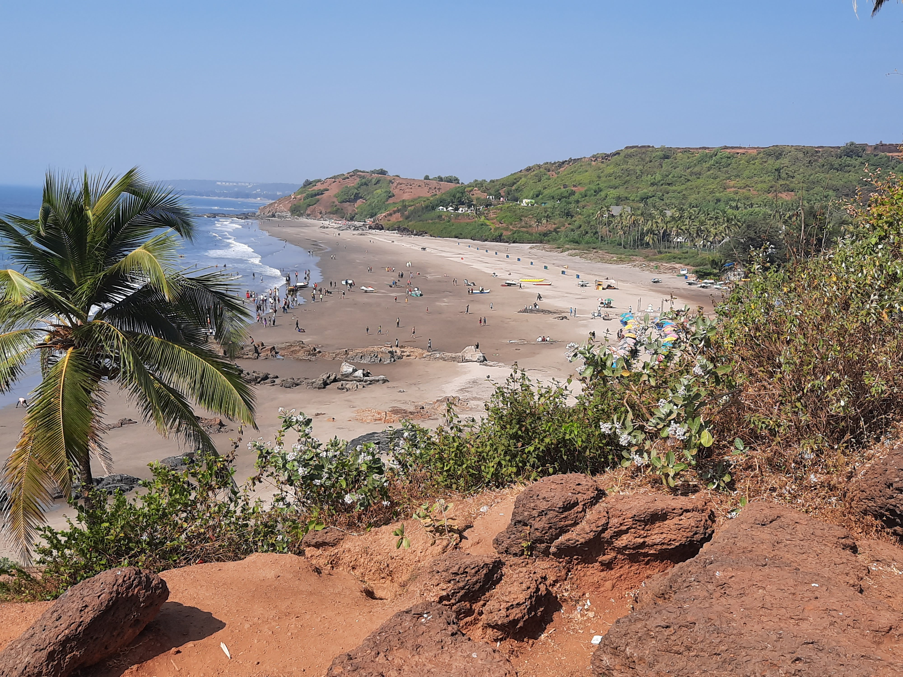

Go Back
Goa

Definitely visit a cenote while you are in this region. Cenotes are basically freshwater sinkholes. They are usually surrounded by very lush jungle and it's a very nice alternative to going to the beach if you enjoy swimming. The cenote I went to was Cenote Azul. It was like a network of cenotes and was very beautiful. There was also a little cliff where you could jump in. In the jungle around you can spot very large iguanas and artifacts which add to the overall experience a lot. It's located about 20 minutes outside of Playa del Carmen and is easy and cheap to get to by colectivo. Colectivo's are shared minibuses that are common in this region. You can go to the colectivo station in Playa del Carmen which is on Calle 1 sur, and between Av 45 Norte and the major highway. Wait in the line and tell either the attendant or the driver you are going to "cenote azul". Once they know your destination you just choose a seat and are ready to go. I believe it cost about 2-3 usd for a seat in the colectivo and the same for the return. You pay when you get off. To return to Playa del Carmen from the cenote just safely cross the highway and wait until you see one driving in the direction you are going. Just raise your arm and try to flag it down. It will stop and you just have to tell the driver where you're going.
The Tulum archaeological site is a very cool place to visit. It features old ruins on a cliff overlooking the Ocean. Nearby is also the beach of Tulum. The park is full of lizards, iguanas and other animals. You can walk around for about an hour or two and explore all the ruins and enjoy the view of the ocean and cliffsides. In order to get here you can take a colectivo. Go to the station I mentioned in the "Cenote" section and take a colectivo to Tulum archaeological site. I believe it cost about 3-4usd per person. It will drop you off at the end of a long road which you must walk down to get to the park. I suppose you could also take a taxi if you don't feel like walking 20 minutes to get to the entrance. It cost about 4 usd to enter the site.
Quinta Avenida or "5th Ave" in English is the main tourist strip in Playa del Carmen. It's just a block behind the main beach of the city. This road has tons of bars and restaurants. While some of the bars can be fun like Cerveceria Chapultepec and McCarthey' Irish Pub the restaurants on this road tended to be extremely overpriced and definitely not worth it compared to what you could find if you walk a few blocks inland. It's a good place to walk down and explore but is extremely touristy for better or worse. The main beach just below Quinta Avenida is quite popular and is usually filled with people. On the beach you will also find Parque los Fundadores which features the Portal Maya statues pictured at the top of the page under the title of my blog. If you want to visit a quieter beach you can go a bit North to Playa Punta Esmeralda. There were less people here and it was also a great beach to enjoy the sunny days at.
As with everywhere in Mexico there are excellent food options. One thing I will point out however is that the food on Quinta Avenida is extremely overpriced and sometimes not even as high of quality as the street food and restaurants you'll find a few blocks inland. There are food carts that sell all the Mexican essentials like tacos, quesadillas, tortas and huaraches. The first time I ever tried a huarache was in Playa del Carmen. It's kind of like a large tostada with your choice of filling and toping. Some of my favourite fillings for tacos/ everything are suadero, birria and campechano. There are three fantastic restaurants that come to mind when I think about my time in Playa del Carmen. Pollos Sinaloa is on Calle 2 Norte and 20 Avenida Norte. They specialize in barbecued chicken. You can get a half chicken for about 4 usd and a full chicken for about 6 usd. The chicken comes with fresh tortillas, rice, onions and some salsas. They also have baked potatoes. I highly recommend this restaurant as it's cheap and delicious. My favourite place to get street tacos was also on Calle 2 Norte and Avenida 15 Norte. Here you will find a handful of food trucks selling the standard Mexican street food. I enjoyed eating here and talking with the cart owners. They were very friendly people and it's also a great way to experience street food culture in Mexico. My two other favourite restaurants in Playa del Carmen were: El Borrego Loco and Michoacanazo Maya. These are both located quite a ways inland from the main tourist area but are worth trips to. El Borrgo loco specializes in lamb birria tacos which were unbelievable, some of the best I've ever had. Michoacanazo Maya also had some of the best tacos I've ever had. They have birria, cochinita pibil and some other kinds of tacos. The birria tacos here might have been the best tacos I've ever had. You also can watch the tortillas get pressed fresh right onto the grill. It doesn't get much better than this place.
Centro is the most popular area for tourists to stay. The part of El Centro closest to the beach is the really touristy area but as you go further inland it gets more local and cheaper. There are tons of things and activities to do in El Centro and it's a great area to stay. The cities tourist infrastructure is mostly here. You will find restaurants, cafes, bars, supermarkets and other important businesses.
Ejidal is further inland from El Centro and is quite a large area of Playa del Carmen. I didn't spend too much time in this area but it does offer a much cheaper alternative to El Centro. The prices here for basically everything are cheaper. It's quite easy to walk to El Centro and the beach area from here so it's a decent option for budget travellers. This is also where the Michoacanazo Maya restaurant is as well as many other restaurants that are more local. I will say this area is a bit more dangerous than El Centro so you should take a bit of caution especially at night.